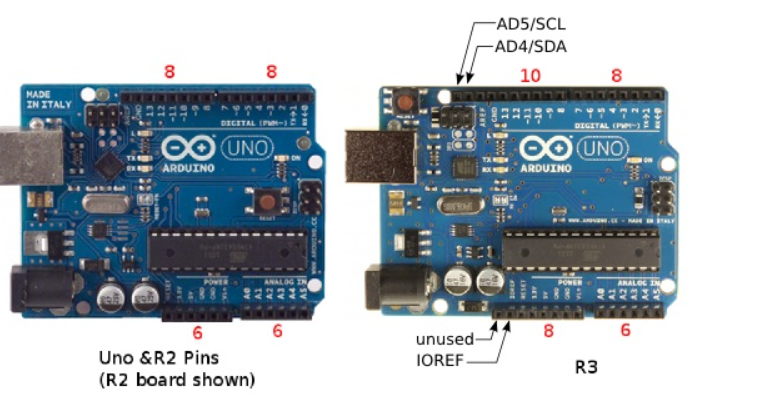

Arduino Uno (R1)
datos
La versión R1 de Arduino Uno fue la primera en utilizar el microcontrolador ATmega328P, que se convirtió en el estándar para las placas Uno posteriores. Esta versión también introdujo el conector USB B para la conexión a la computadora.

Diferencias entre el Arduino Uno, R2 y R3 original
Posición del chip USB
En la placa Arduino Uno revisión 2, el ATMEGA8U2 está colocado a 45 grados. Esto se cambia de nuevo a la posición cuadrada en el tablero de revisión 3.

Almohadillas de soldadura
Tanto la revisión 2 como la 3 placas añaden cuatro almohadillas de soldadura (JP2) que se conectan a los pines PB4 a PB7 del USB ATMEGA.

Número de pieza
Tanto el Arduino Uno como el Arduino Uno revision 2 tienen un microcontrolador USB ATMEGA8U2 a bordo, que se ha actualizado a un ATMEGA16U2 en la placa de revisión 3.
Restablecer circuito
La revisión 3 agrega un diodo a través de la resistencia pull-up del pin de reinicio USB ATMEGA.

Encabezado ICSP
Las placas Revision 2 y 3 se suministran con pines de cabecera en el cabezal USB ATMEGA ICSP en lugar de solo almohadillas de soldadura en el Arduino Uno.

Línea DTR (HWB)
Las placas de revisión 2 y 3 añaden una resistencia pull-down de 1k a la línea DTR (HWB) procedente del microcontrolador USB ATMEGA, del pin PD7.
.png)
LED "L" integrado
El Arduino Uno y el Arduino Uno revision 2 tienen un LED y una resistencia conectados en serie en el pin 13 de Arduino. La placa de revisión 3 amortigua este LED/resistencia a través de un amplificador operacional de ganancia unitaria. Este es el amplificador operacional de repuesto que no se usó en las placas anteriores.

Conectores
La placa de revisión 3 cambia el conector de 8 pines que contiene los pines de Arduino 8 a 13, GND y AREF por un conector de 10 pines. Los 2 pines adicionales están conectados a AD4/SDA y AD5/SCL. Estos son los dos pines de entrada analógica que se pueden utilizar para I2C. Estos pines todavía están conectados en su posición habitual en la placa de revisión 3, pero también están conectados a los dos pines adicionales en el cabezal de 10 pines. Las placas de revisión 3 también cambian el conector de 6 pines que tiene el pin de restablecimiento conectado a un conector de 8 pines. Uno de los nuevos pines de este cabezal es el pin IOREF que permite que los shields conectados a la placa se adapten al voltaje de la placa. El segundo pin no está conectado y está reservado para uso futuro.
Pin de reinicio ATMEGA
La placa de revisión 3 agrega un diodo a través de la resistencia de pin de reinicio del ATMEGA328P microcontrolador.

Posición del botón de reinicio
La placa de revisión 3 mueve el interruptor de botón de restablecimiento de ATMEGA328 desde detrás del encabezado ICSP y lo coloca junto al conector USB (vea la primera imagen en la parte superior de la página).
Esquemas de Arduino Uno
los esquemas de la placa Arduino Uno para que te hagas una idea
Descargar PDFdatos tenicos
Arduino Uno (R1)
- Flash: 32 KB
- SRAM: 2 KB
- EEPROM: 1 KB
- 14 entradas/salidas digitales
- 6 salidas analógicas
- 1 puerto serie (UART)
- 1 puerto SPI
- 1 puerto I2C
- Tensión de funcionamiento: 5V
- Corriente de funcionamiento: 50 mA
- Dimensiones: 68.6 x 53.4 mm